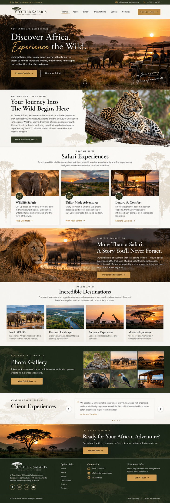

Discover Africa. Experience the Wild.
Unforgettable, tailor-made safari journeys that bring you closer to Africa’s incredible wildlife, breathtaking landscapes and authentic cultural experiences.
Your Journey Into The Wild Begins Here
At Cotter Safaris, we create authentic African safari experiences that connect you with nature, wildlife and the beauty of untouched landscapes.
Safari Experiences
Wildlife Safaris, Tailor-Made Adventures, Luxury & Comfort.
More Than a Safari. A Story You’ll Never Forget.
Incredible Destinations
Iconic Wildlife, Untamed Landscapes, Authentic Experiences, Memorable Journeys.